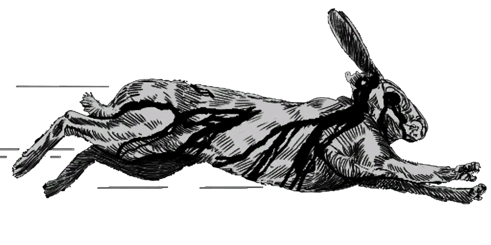
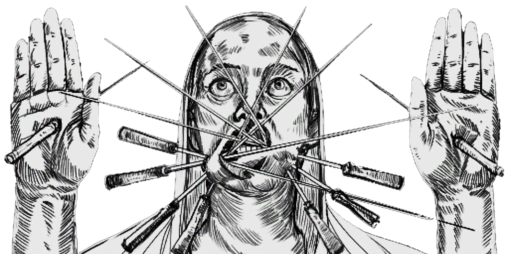

Adrenailne
- Instantly start regenerating Stamina while your Health is critically low.

Bloodless
- Bleeding will not escalate from light to medium or intense bleeding. (i.e. any bleeding you incur will only ever be light bleeding).
Determination
- Stamina recovery starts sooner. (Applies to both melee and sprinting stamina).
Hornskin
- Reduce damage taken from blunt melee by 25%.